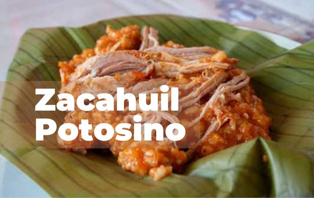

Tacos Rojos

Simplemente la cena ideal... taquitos con tortilla frita bañada en salsa de chile ancho, rellenos de carne deshebrada, papa o frijoles.
Acompañados de papas, zanahorias y patitas en vinagre.
¿De qué tienes ganas hoy?

El zacahuil es un tamal gigante, originario de la región Huasteca, más común en San Luis Potosi, Veracruz e Hidalgo.
Es considerado "el rey de los tamales" debido a su inmenso tamaño, llegando a medir más de un metro de largo y pesando hasta 50kg.
Suficiente para alimentar a decenas de personas.
Simplemente la cena ideal... taquitos con tortilla frita bañada en salsa de chile ancho, rellenos de carne deshebrada, papa o frijoles.
Acompañados de papas, zanahorias y patitas en vinagre.